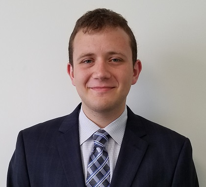

Hello again. This page provides a description of myself and can help you understand who I am and what I do. I am currently an undergraduate at the Pennsylvania State University (Penn State). I am a Senior, majoring in Toxicology with a concentration in Information Science and Technology. At Penn State and outside of Penn State, I am involved in many diverse activities. I have done many things and held many different positions within organizations of varying structures and sizes. I have experience being a leader as well as a team member. I have founded organizations, grown organizations, I have experience working in the upper leadership, participating in middle management and simply being an active member. As an individual, I have often found my work is never quite the same in two areas and it is often through my interdisciplinary experiences and ideas that I am able to forge unique and robust relationships, while making meaningful contributions to organizations and causes.
With this, I also have a viable technical skill sets. I combine technical skills with a ferocious work ethic, professional appetite and diverse work and life experiences to find success. Some of my technical skill sets include machine learning, software/application development, full stack web development, bioinformatics, additive manufacturing, embedded programming and high performance computing. I currently know C/C++, Python, Perl, R, HTML/CSS, Java Script and R, in addition to an ever greater number of languages which I have dabbled in and am fairly comfortable with. I also have a strong research and project management skill set. I currently do research in two different colleges at Penn State and manage a wide and diverse portfolio of projects within the larger Penn State community. I will not list all of my skills and experiences here, as they can be found in other area of this site ie. my Resume or LinkedIn . The purpose of this webpage is to provide you with a perspective which can not be found within those other resources. Also, outside of my work when I do have a free moment, I enjoy working on a number of pet projects, taking a MOOC on a cool topic, hiking, rock climbing and just hanging out with good friends and colleagues enjoying a restful moment. I hope these short two paragraphs helped you get a better idea of who I am.
Hello again. This page provides a description of myself and can help you understand who I am and what I do. I am currently an undergraduate at the Pennsylvania State University (Penn State). I am a Senior, majoring in Toxicology with a concentration in Information Science and Technology. At Penn State and outside of Penn State, I am involved in many diverse activities. I have done many things and held many different positions within organizations of varying structures and sizes. I have experience being a leader as well as a team member. I have founded organizations, grown organizations, I have experience working in the upper leadership, participating in middle management and simply being an active member. As an individual, I have often found my work is never quite the same in two areas and it is often through my interdisciplinary experiences and ideas that I am able to forge unique and robust relationships, while making meaningful contributions to organizations and causes.
With this, I also have a viable technical skill sets. I combine technical skills with a ferocious work ethic, professional appetite and diverse work and life experiences to find success. Some of my technical skill sets include machine learning, software/application development, full stack web development, bioinformatics, additive manufacturing, embedded programming and high performance computing. I currently know C/C++, Python, Perl, R, HTML/CSS, Java Script and R, in addition to an ever greater number of languages which I have dabbled in and am fairly comfortable with. I also have a strong research and project management skill set. I currently do research in two different colleges at Penn State and manage a wide and diverse portfolio of projects within the larger Penn State community. I will not list all of my skills and experiences here, as they can be found in other area of this site ie. my Resume or LinkedIn . The purpose of this webpage is to provide you with a perspective which can not be found within those other resources. Also, outside of my work when I do have a free moment, I enjoy working on a number of pet projects, taking a MOOC on a cool topic, hiking, rock climbing and just hanging out with good friends and colleagues enjoying a restful moment. I hope these short two paragraphs helped you get a better idea of who I am.
{kind=link}